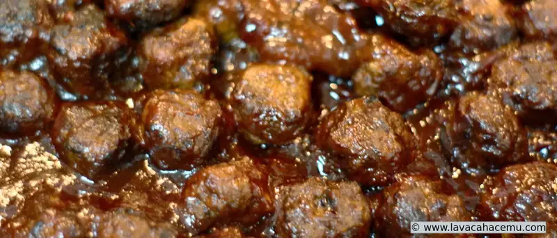
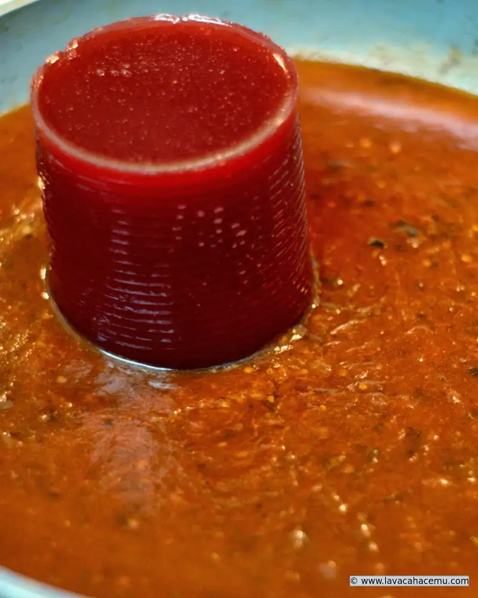
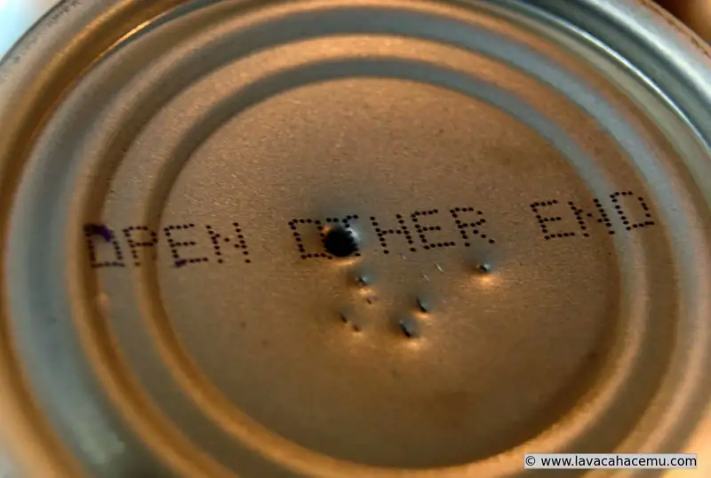

Albóndigas con chipotle y arándanos recetas

{kind=link}
JA! esta receta la provee heinz!! bueno, la versión de ellos es muy... em.. "_práctica_" (<-- nótese el doble énfasis :P) pero la receta originalmente la saqué de un post en reddit, donde usan la misma :| receta de Heinz... oh well.. pero ellos se creen taaaaan creativos!! 'ches goebones también.. cómo que con albóndigas compradas? bueno, debo admitir que para esta ocasión consideré comprar congeladas y hacer la receta tal como la indica Heinz.. pero.. nee, muy poquitas en el paquete y pues, un tanto caras.. haciéndolas en casa fácil hice como 3 veces más y como se obtienen los "restos" de donde se doran, la salsa queda más sabrosa. La primera vez que hice estas fue en Navidad que nos invitaron a la casa de unos amigos a pasar un rato con ellos antes de la cena de Nochebuena; esa vez lo que admito que me falló es que hice las albóndigas muy grandes.
Ingredientes
Para las albóndigas
- 2 lb carne molida
- 1/2 cebolla mediana finamente picada
- 1 cda salsa de chipotle
- 1 ~ 2 chipotles
- 1/2 cda mostaza
- 1 huevo
Para la salsa
- 1 botella de chili de heinz
- 1 lata de salsa de arándanos
- 1~2 chipotles
- 1/2 tz cerveza
Procedimiento
Mezcla todos los ingredientes de las albóndigas y.. _haz albóndigas_ de apróximadamente 2 cm.
{kind=link}
Dóralas en un sartén, procurando no sobrecargarlo
{kind=link}
Una vez doradas, retíralas
Sin regresar al fuego, agrega la cerveza al sartén para deglasearlo
Una vez deglaseado, agrega la salsa de chiles y la de arándanos

{kind=link}
Claro, después de mentársela a la lata moderna porque no se puede abrir de abajo para sacarle la salsa fácil... si, lo que haces es picarlas con algo... como un sacacorchos :P

{kind=link}
Una vez incorporada la salsa, regresa las albóndigas a la salsa y déjalas terminar de cocerse un par de horas.
Sirve con picadientes y apúrale a comer, que se acaban!